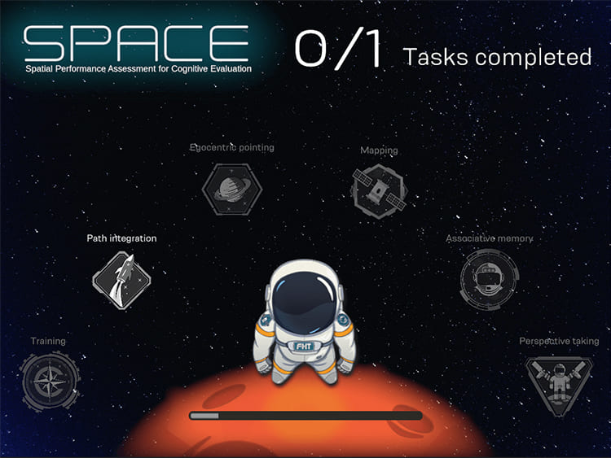

A research platform, not a conventional game
SPACE (Spatial Performance Assessment for Cognitive Evaluation) is an iPad-based spatial assessment platform developed in collaboration with researchers. The software had to translate evolving scientific requirements into an interactive, repeatable system for configuring spatial trials, guiding participants through tasks, and recording results.
The research team describes SPACE as an age-friendly serious game for detecting cognitive impairment. Its development and usability are reported in a 2024 Computers in Human Behavior paper by researchers affiliated with ETH Zürich, the Singapore-ETH Centre, and other institutions.
Unlike a conventional game project, the product had to remain flexible as the research evolved. That made long-term architecture, researcher-facing tooling, usability, data handling, and reliability as important as the 3D experience itself.
My responsibility
I led the three-year Unity development of SPACE, working with two other developers, and owned the core architecture and major implementation decisions. I collaborated directly with the research team to turn experimental requirements into software behavior.
What I owned
- Application architecture
- Researcher/configuration dashboard
- Major UI systems
- Trial configuration and validation behavior
- 2D spatial configuration connected to the 3D environment
- Localization implementation
- Asset/memory lifecycle
- Performance optimization
- iOS device debugging and production support
Not mine
- The scientific methodology, study design, and research findings belong to the research authors.
- Two other developers contributed to the application.
Turning research rules into usable authoring tools
Researchers needed to configure landmark layouts and trials without manually editing game data. The resulting dashboard became a substantial authoring tool rather than a normal settings screen.
The interface allowed landmarks to be dragged into a coordinate field, trials to be created from landmark combinations, and valid configurations to be checked against spatial constraints. It exposed relationships such as angles, distances, homing rotation, path distances, ordering, and the 2D positions of the available landmarks. Paths that intersected invalid landmark regions could invalidate the configuration, and the UI reflected whether the trial set was ready to use.
The same 2D configuration represented the corresponding 3D simulation space, so the dashboard had to connect researcher-friendly controls with the spatial rules used by the assessment environment.
- Research configurationlandmarks placed in a 2D coordinate field
- Validationspatial constraints, paths, ordering
- Saved trial dataserialized experiment configuration
- 3D assessmentparticipant task flow and recorded results
Conceptual only. The 2D configuration maps to the 3D simulation space; the specific geometric validation rules are not reproduced here.
Architecture approach
- MVP-style separation for UI-heavy workflows
- ScriptableObjects for authored/configuration data where appropriate
- Interfaces and services for separation of responsibilities
- Observer/events for state changes and UI updates
- Serialization/recording of experiment configuration and participant data
Supporting 16 languages without destroying UI usability
SPACE supported 16 localization languages through Unity's Localization package. Text expansion and different language lengths repeatedly changed the space required by controls, which could break readability and interaction in a dense research interface.
Scrollable/masked text solved some usability problems but introduced rendering cost when used heavily. I therefore used masking selectively/on demand rather than leaving expensive masking behavior active throughout the interface.
Key tradeoff
Preserve readability across languages without accepting unnecessary rendering overhead everywhere.
Memory pressure on iPad
Real 3D models, textures, meshes, multiple application modes, and transitions between configuration/gameplay states created memory pressure on iPad. Assets remaining resident across transitions could eventually contribute to out-of-memory crashes.
I used profiling and device debugging to identify memory-heavy content, then moved significant content into local Addressables and explicit asynchronous load/unload flows. Loading screens were used where necessary to hide transitions while asset ownership was made more deliberate.
Implementation themes
- Addressables
- Asynchronous loading/unloading
- Explicit release/lifecycle management
- Texture/mesh residency awareness
- Loading screens around expensive transitions
- Xcode crash/device debugging
UI and rendering performance
The application was UI-heavy. A large single Canvas caused unnecessary redraw/rebuild cost as parts of the dashboard changed, so I split the interface across multiple canvases to isolate frequently changing regions.
In the 3D environment I also addressed rendering cost through a combination of LODs, CullingGroup-based visibility decisions, batching where appropriate, texture atlasing, material-count reduction, and selective mesh combining. I used the Unity Profiler and rendering/debugging tools to validate bottlenecks rather than applying optimizations blindly.
Key technical decisions
DecisionBuild a researcher-facing authoring dashboard rather than hard-code trials
Why: The research evolved over time. Giving researchers a structured way to configure and validate trials reduced the need to rewrite the application for every experimental adjustment.
DecisionRewrite modules when research requirements outgrew the original design
Why: Preserving an unsuitable implementation would have made later experiments harder to support. Long-term research software required architecture to evolve with the study rather than accumulate patches indefinitely.
DecisionAddressables and explicit lifecycle management for heavy content
Why: Keeping content resident was not viable on the target iPad memory budget. Explicit loading/release made transitions more complex but gave the application better control over memory.
DecisionConditional UI masking
Why: Localization required flexible/scrollable text, but always-on masking had a performance cost. Enabling it only where needed balanced usability and rendering overhead.
Outcome
SPACE progressed from a software project into a platform used across a multi-year research program and publicly documented in research publications. My contribution was leading the engineering implementation and evolution of that platform; the scientific methodology and findings belong to the research authors.
What this project represents
SPACE is the project that best represents my ability to own a system for years rather than only deliver an isolated feature. The hardest part was not any single Unity API. It was repeatedly translating research requirements into software while keeping the application usable, maintainable, performant, and stable on constrained hardware.
Media & external evidence

Play video: SPACE demo video- Demo video on YouTube (opens in new tab)
- Colombo et al. (2024), “Detecting cognitive impairment through an age-friendly serious game: The development and usability of the Spatial Performance Assessment for Cognitive Evaluation (SPACE)”, Computers in Human Behavior (opens in new tab). I am not an author; the scientific work is the authors’. I led the Unity development of the software platform.